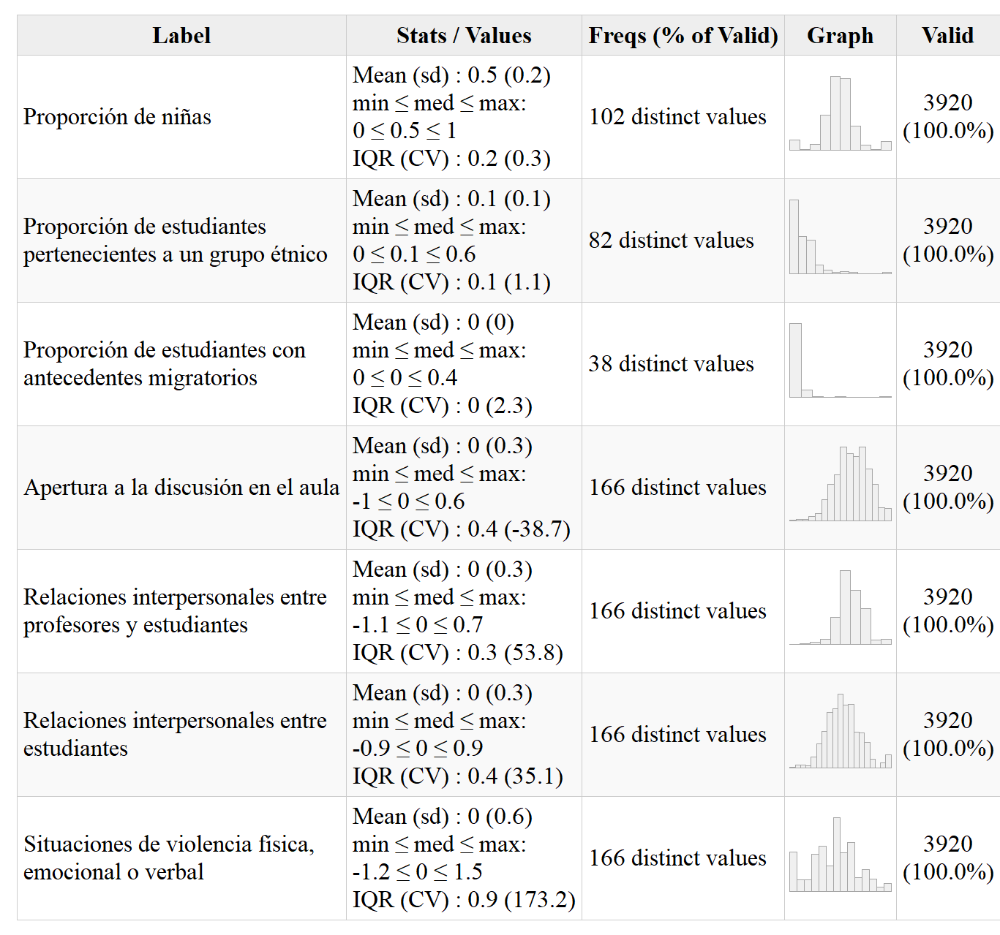

4.1 Análisis descriptivo
En relación con las tres dimensiones de actitudes hacia la igualdad de derechos, el análisis descriptivo presentado en la Tabla 4.1 muestra que, en términos generales, las puntuaciones factoriales obtenidas poseen una media de -0.1 (las desviaciones estándar varían entre 0.6 y 0.7). Las actitudes de los estudiantes hacia la igualdad de derechos entre hombres y mujeres varía entre los valores -2.8 y 0.4, mientras que las actitudes hacia la igualdad de derechos para grupos étnicos posee valores entre -2.8 y 0.5, y las actitudes hacia la igualdad de derechos para homosexuales varía entre -2 y 0.7. Cabe precisar que la mayoría de las respuestas de los estudiantes se concentran en valores cercanos al máximo, más precisamente, en las tres variables dependientes al menos un 50 % de los estudiantes poseen un valor igual o superior a 0.
 |
En relación con la distribución de las variables independientes de nivel individual (que se presenta en la Tabla 4.2), cabe destacar que un 49.6% de los estudiantes son de sexo masculino y un 50.4% de sexo femenino, un 1.8% de los estudiantes posee antecedentes migratorios y un 8.1% de los estudiantes pertenece a un grupo étnico. El nivel de conocimiento cívico en la muestra varía entre 232.1 y 782.7 puntos, con una mediana de 503 puntos (media=498.6, ds=93.4). Por último, vale precisar también cómo se distribuyen los recursos socioeconómicos de la familia en la muestra analizada en este estudio. En relación con el nivel educacional de los padres, el 2.5% no completo la enseñanza básica; el 9.8% curso enseñanza básica; el 37.9% completo la enseñanza media; el 19.6% posee una carrera profesional o técnica; y el 30.3% tiene una carrera universitaria o estudios de posgrado (magister o doctorado). En cuanto al estatus ocupacional de los padres, los valores varían entre 10 y 89, con una mediana de 42 puntos (media=46; ds=17.5). Finalmente, en lo que refiere a la cantidad de libros en el hogar, un 20.7% posee entre 0 y 10 libros; un 30.1% posee entre 11 y 25 libros; un 32.1% posee entre 26 y 100 libros; un 9.7% posee entre 101 y 200 libros; y un 7.4% posee más de 200 libros.
Por otro lado, en la Tabla 4.3 se presenta la distribución de las variables relativas a las características y prácticas de la escuela. La proporción de niñas en el aula varía entre 0 y 1 (media=0.5, ds=0.2), teniendo una distribución muy similar a la normal. La proporción de estudiantes pertenecientes a un grupo étnico varía entre 0 y 0.6 (media=0.1, ds=0.1), concentrándose la mayoría de las aulas en los valores más bajos (es decir, la mayoría tiene una baja proporción de estudiantes pertenecientes a grupos étnicos). La proporción de estudiantes con antecedentes migratorios varía entre 0 y 0.4 (media=0, ds=0), lo que indica que la gran mayoría de las escuelas tiene una muy baja proporción de estudiantes con antecedentes migratorios. En relación con la apertura a la discusión en el aula, calculada a partir de puntuaciones factoriales, varía entre -1 y 0.6, y tanto su media como su mediana es 0 (ds=0.3). Las tres variables relativas al clima escolar también han sido calculadas a partir de puntuaciones factoriales, distribuyéndose del siguiente modo: (1) las relaciones entre estudiantes y profesores varían entre -1.1 y 0.7 (ds=0.3), (2) las relaciones entre estudiantes varían entre -0.9 y 0.9 (ds=0.3), y (3) las situaciones de violencia física, emocional o verbal varían entre -1.2 y 1.5 (ds=0.6) (además, vale precisar que las tres variables tienen una media y una mediana igual a 0).
|  |